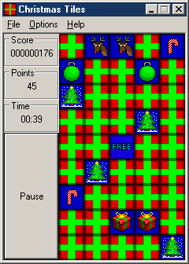

Christmas Tiles
Christmas Tiles is a simple tile matching memory game for Windows (2000 all the way to 11). Flip over a present, and find a matching present to score.
Written in Pure Win32 API and C++.
Requirements
Windows 11(64-Bit Only)
Windows 10 (64-Bit Only)
Windows 8.1 (64-Bit Only) [1]
Windows 7 (64-Bit Only)
Windows Vista (64-Bit Only) [1]
Windows XP[2] (32-Bit Only)
Windows 2000[2] (32-Bit Only)
Windows 98/ME (Via Kernel Ex)[3]
[1] Untested, no plans to test it.
[2] May have issues.
[3] Not officially supported, but happy to note it does work.
Features
Custom Tile sets
Per Monitor DPI support
Classic Windows 2000/XP DPI support
UTF-8 Compliant, and easy to translate
Small EXE. With just the standard tile set, the game is less than 150 KB.
Screenshots

Windows 10

Windows 2000

Windows 98 SE
Custom Tile Sets
Tiles are equal height and width. The height of the tile set image determines how wide each individual tile is. Thus if the height of the bitmap is 32 pixels tall, each tile will be 32 tiles wide.
Translations
Currently only English is supported, and the menu item does nothing. If you would like to translate this program, please edit lang_en.txt and submit it to me.
License
The code of Christmas Tiles is made available under the 3-Clause BSD license with the addition of the Redistributions clause from the Sleepycat License.